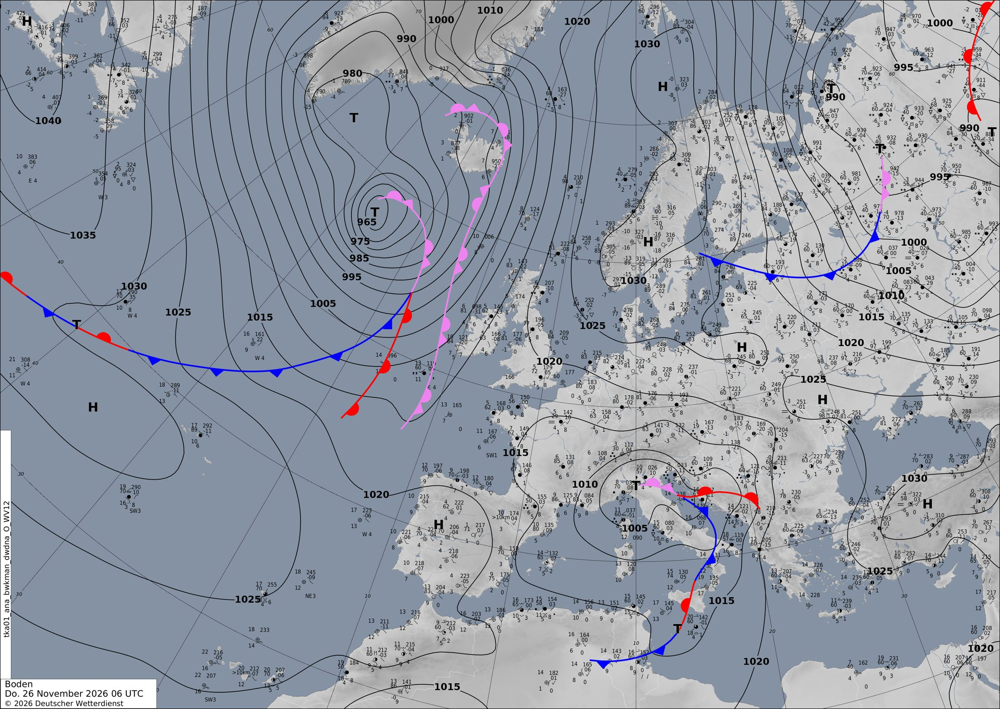

Borrasca profunda junto a Islandia, bloqueo en el norte y frío seco en París
Una borrasca atlántica se hunde hasta unos 950 hPa camino de Islandia, mientras un anticiclón de bloqueo se instala en el norte de Europa. Entre medias, una pequeña borrasca en el golfo de Génova trae viento del norte y chubascos al Mediterráneo occidental antes de irse hacia Grecia.
Europa y el Atlántico
Hoy en el mapa de Europa hay tres protagonistas.
1. Una borrasca atlántica que se hace más profunda. Esta madrugada, una borrasca de 970 hPa giraba en pleno Atlántico norte. Por encima pasa una corriente en chorro de hasta 320 km/h, al este de Terranova. El chorro le da energía: mañana a medianoche estará al suroeste de Islandia con unos 950 hPa. Son 20 hPa menos en un solo día. En el satélite se ve su espiral de nubes, y la carta del DWD de las 06 UTC ya la dibuja con 965 hPa y un frente ocluido enroscado a su alrededor. Mira aquí cómo se aprietan las isobaras.
2. Un anticiclón que hace de tapón. Sobre el sur de Noruega hay un anticiclón de 1035 hPa. Por encima tiene una dorsal en altura que forma un bloqueo, es decir, frena la circulación normal del oeste. Y no se va: el sábado estará sobre el Báltico con 1039 hPa y la noche del sábado al domingo sobre Bielorrusia con 1045 hPa. Las borrascas del Atlántico tropiezan con él y se desvían hacia Islandia. Mientras tanto, por su lado sur llega aire frío hacia Alemania y el este de Francia.
3. Una borrasca mediterránea con frío en altura. En el golfo de Génova hay una borrasca pequeña, de 1002 hPa. Encima tiene una bolsa de aire frío a unos 5500 m, sobre Córcega, que se ve como un hundimiento de 544 dam en el mapa de 500 hPa. En el satélite es la «coma» de nubes blancas sobre Italia. Mañana se va hacia el este y descarga lluvias fuertes entre el sur de Italia y Grecia, de hasta 88 mm en 12 horas frente a Albania. Al sur de Sicilia el aire acumula mucha energía para tormentas: un CAPE de casi 2800 J/kg (mira aquí). El domingo, el frío en altura se queda aislado al noreste de Sicilia, como una pequeña DANA, y deja una borrasca al sur de Grecia.
El fin de semana se forma una nueva borrasca de unos 997 hPa al oeste de Irlanda, que acerca frentes atlánticos a la fachada oeste del continente. Ojo: a +72 h el modelo todavía puede mover estas piezas.
En península ibérica y Baleares
La Península empieza el día con altas presiones: la carta del DWD dibuja una H en el centro. Pero hay dos excepciones.
El nordeste y Baleares. Aquí influye la borrasca de Génova. Entre el anticiclón, al oeste, y la borrasca, al este, las isobaras se juntan y el aire baja desde el norte. Es la situación típica de la tramontana en el Ampurdán y Menorca, uno de los vientos regionales más conocidos. El modelo da rachas de hasta unos 50 km/h hoy. Además, mañana pasa sobre Baleares una vaguada en altura que ayuda a que el aire suba y forme chubascos. El modelo da hasta 25 mm entre las 00 y las 12 UTC de hoy en algún punto del extremo nordeste, y entre 8 y 15 mm en 12 horas el viernes (mira aquí).
El frío nocturno. Con cielos despejados y poco viento, el suelo pierde calor por la noche. Mañana a medianoche la temperatura más baja de la región será de unos −12 °C, seguramente en zonas altas del Pirineo. A mediodía, en cambio, el litoral sur y mediterráneo rondará los 18–19 °C.
El sábado cambia la masa de aire. La temperatura media a 850 hPa sube de unos 3 °C hoy a 7 °C el sábado, porque entra aire atlántico más suave por el oeste. Con él llegan los frentes de la borrasca de Irlanda: el sábado entre las 00 y las 12 UTC podrían caer hasta 20 mm en 12 horas, y unos 12 mm la noche del sábado al domingo. Lo más probable es que llueva en Galicia y el Cantábrico. El viento será más flojo: no pasará de unos 30 km/h el domingo.
En Francia
En Francia coinciden los tres protagonistas, cada uno por un lado del país.
Sureste: Córcega y el mistral. La borrasca de Génova pasa hoy por Córcega. Es la zona con más lluvia, hasta unos 25 mm en 12 horas esta mañana, y con algo de inestabilidad. La misma pareja de anticiclón y borrasca que da tramontana en Cataluña empuja el mistral valle del Ródano abajo, con viento de hasta 55 km/h a mediodía.
Noreste: llega el frío del bloqueo. Mañana pasa sobre Alemania la bolsa de aire frío en altura. Por eso la temperatura a 850 hPa baja a unos −8 °C en el este de Francia el viernes. En las cumbres de los Alpes el modelo marca −20 °C la noche del viernes al sábado.
Oeste: el sábado, aire más templado y lluvia. La temperatura media a 850 hPa pasa de 1 °C a casi 6 °C, y los frentes atlánticos entran por la costa oeste. El sábado entre las 00 y las 12 UTC podrían caer hasta 21 mm en 12 horas, y unos 16 mm la noche siguiente. Lo más probable es que llueva en Bretaña y la fachada atlántica (mira aquí).
París y alrededores. La presión sube de 1013 a 1026 hPa: París queda bajo el anticiclón, con aire seco y en calma. Hoy, unos 4–6 °C a medianoche y 4–5 °C a mediodía. El viernes, helada débil a medianoche (de −2,5 a −1 °C) y 2,5–4 °C a mediodía. El sábado, de −2 a 1 °C a medianoche y 3–4,5 °C a mediodía. El domingo a medianoche, 1–4 °C. Prácticamente no lloverá: como mucho 0,2 mm. El viento será flojo, por debajo de 15 km/h. Con calma, frío y altas presiones pueden aparecer nieblas o cielos grises bajo una inversión térmica.
Lección del día: Por qué sopla el viento
Hoy es un buen día para aprender a deducir el viento a partir de las isobaras.
- Abre el mapa de presión de mañana a medianoche (mira aquí). Busca la borrasca de unos 950 hPa al suroeste de Islandia.
- Cuenta cuántas isobaras (van cada 4 hPa) hay entre su centro y Escocia. Están muy juntas: la presión cambia mucho en poca distancia.
- Ahora baja hasta París. Allí apenas cruza alguna isobara y la presión casi no cambia de un sitio a otro.
- Mira las flechas del viento. Junto a Islandia son largas y numerosas. Sobre París casi no se ven: el modelo da menos de 15 km/h.
- Fíjate en el sentido del giro. Alrededor de la borrasca, el viento gira al revés que las agujas del reloj. Alrededor del anticiclón de Escandinavia, en el mismo sentido que ellas.
Conclusión: cuanto más juntas están las isobaras, más fuerte sopla el viento, y este corre casi paralelo a ellas.
Ponte a prueba
3 preguntas sobre el tiempo de hoy. Puedes mirar el mapa antes de contestar.
Mañana a medianoche, ¿dónde soplará más el viento en superficie?
Junto a la borrasca de unos 950 hPa las isobaras están muy apretadas, y eso significa viento fuerte. En París y en el centro de los anticiclones están muy separadas (mira aquí). Lo explica la ficha por qué sopla el viento.
¿Por qué en París casi no lloverá estos días y las noches serán frías?
La presión en París sube de 1013 a 1026 hPa. En un anticiclón el aire baja y despeja el cielo, y sin viento el suelo se enfría mucho por la noche (mira aquí).
¿Qué pasará con la temperatura a 850 hPa en la Península el sábado, y por qué?
La media a 850 hPa pasa de unos 3 °C hoy a 7 °C el sábado, porque con la borrasca de Irlanda entra por el oeste una masa de aire atlántica más templada (mira aquí).
La carta oficial
Análisis de superficie del servicio meteorológico alemán (DWD) válido el 26/11/2026 a las 06 UTC, dibujado por meteorólogos a partir de observaciones. Aquí sí hay frentes: azul con triángulos, frío; rojo con semicírculos, cálido; morado, ocluido. Las borrascas son T y los anticiclones H. Cómo leer esta carta.
